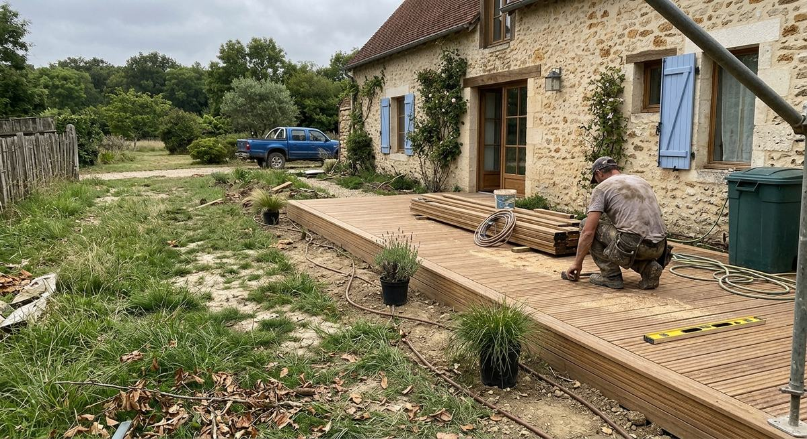
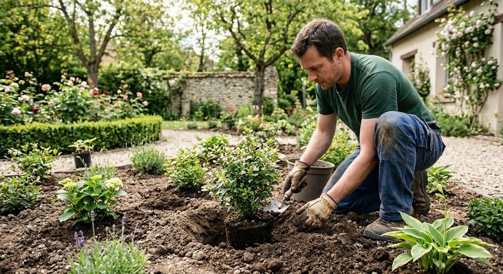
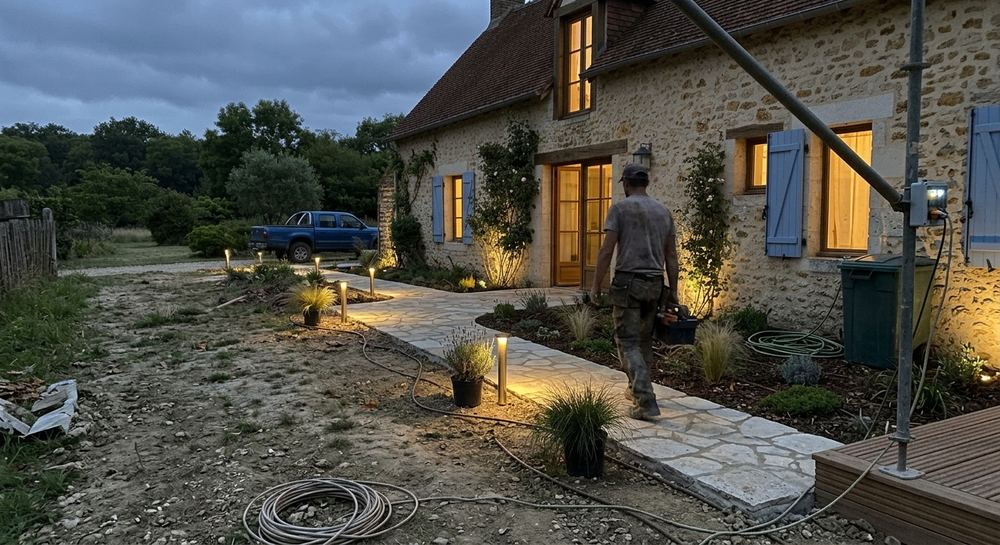
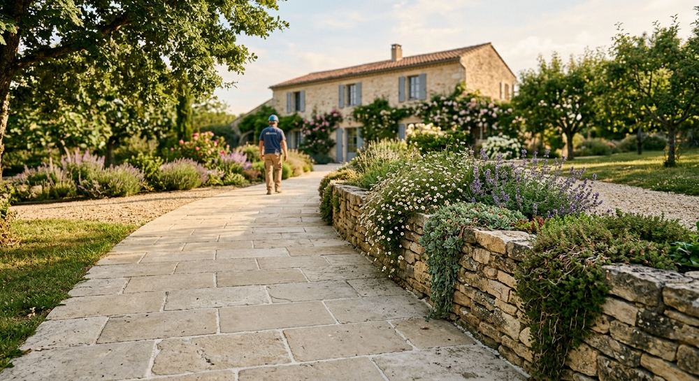
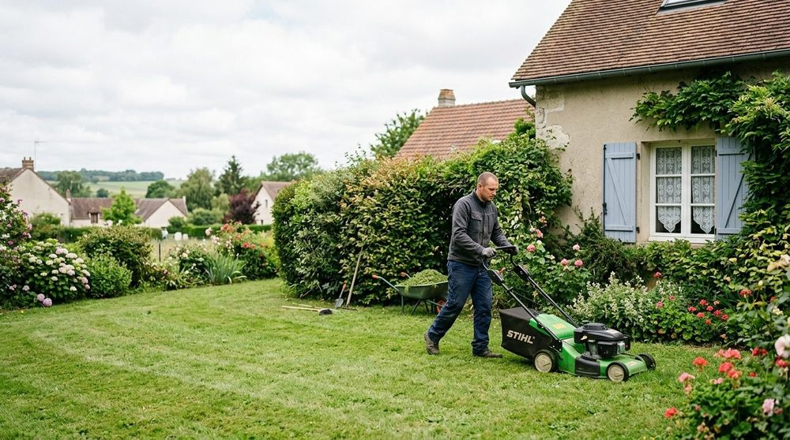

Maçonnerie paysagère
Murets, marches et soutènements en pierre pour structurer un terrain en pente ou en niveaux.
Prestations
Création, terrasses et allées, maçonnerie paysagère et entretien : quatre savoir-faire d'aménagement paysager à Évry-Courcouronnes et alentours.


Création de jardins
Pelouses, massifs, plantations : l'aménagement est adapté à la surface, à l'exposition et à l'usage que vous faites de votre extérieur.

Terrasses et allées
Une terrasse en bois prolonge la maison, une allée dallée ou pavée relie les espaces du jardin.


Maçonnerie paysagère et entretien
Murets, marches et soutènements en pierre pour structurer un terrain en pente ou en niveaux.

Un suivi régulier pour garder pelouses et massifs en bon état toute l'année.
Laurence Lelièvre et son équipe vous répondent par téléphone.